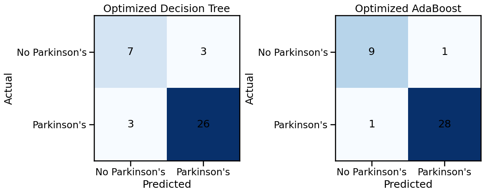

Pinned Machine learningMachine Learning ProjectI compared Decision Tree and AdaBoost models using Parkinson’s voice measurements.View projectAll projects.
Showing 6 projects Data & AINESSO Safety Monitoring SystemWe used four NESSO devices to collect movement readings and flag possible safety incidents.View project
Data & AINESSO Safety Monitoring SystemWe used four NESSO devices to collect movement readings and flag possible safety incidents.View project
 EngineeringEngineering Exploration ProjectOur small-scale tri-star wheel prototype, with an Arduino-controlled motor circuit.View project
EngineeringEngineering Exploration ProjectOur small-scale tri-star wheel prototype, with an Arduino-controlled motor circuit.View project
 IoTIoT System for Sustainable Household LivingFour sensor functions for ventilation, lighting, soil moisture and doorway alerts.View project
IoTIoT System for Sustainable Household LivingFour sensor functions for ventilation, lighting, soil moisture and doorway alerts.View project
 CloudAWS Music Store Web ApplicationA nine-instrument catalogue on AWS, with MySQL product data and S3 images.View project
CloudAWS Music Store Web ApplicationA nine-instrument catalogue on AWS, with MySQL product data and S3 images.View project
 DATA & AI · PROJECT 05Road Safety & Infrastructure AnalysisMy Power BI analysis of Singapore road infrastructure, accidents, injuries and deaths.View project
DATA & AI · PROJECT 05Road Safety & Infrastructure AnalysisMy Power BI analysis of Singapore road infrastructure, accidents, injuries and deaths.View project
No projects found.
Try a different search or category.